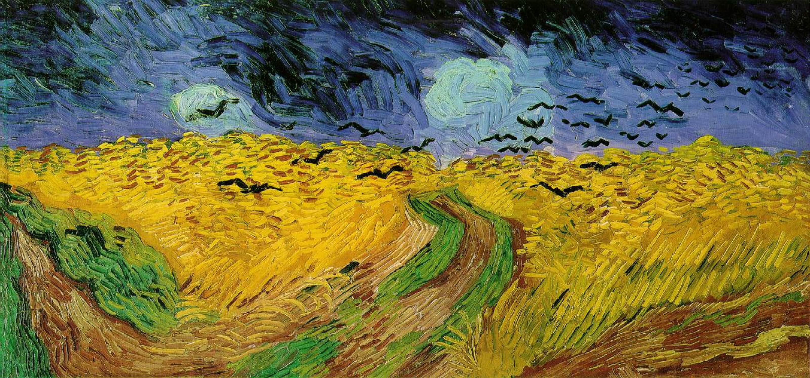

From the Avon lane grove, a linear copse near Saltford, to the cascades steps in Bristol city centre, the film itinerary is following the route of the Bristol and Path Railway Path, a former train track that was converted into a cycle and pedestrian lane. The advance through a diversity of urban rings is very progressive. The route is split in thirteen sequences that fit with the thirteen days of filming.
Sequence 1 - Leaving the forest
(10.4-10.9 miles from the centre)
The first image shows a bucolic environment, captured from a grove along the cycle lane. The audible human voices are indicating the road just below. Those two introduction views will remain an exception to the rest because the camera won’t leave the path afterward. This choice was made to strengthen the principle of the movie: to start from a rural point and to travel on the long green way until reaching the centre of Bristol. This cinematic hike, filmed in thirteen days, was the occasion to gather a compilation of videos and landscapes in order to describe the progression into a milieu becoming more and more urban. The purpose is to question the intrinsic element of the city, to find out the spatial subdivisions and to survey the demarcations.
The empty forest is left to then access the path. One could rapidly understand that the place is maintained and frequented by noticing the benches, the bins, and the traffic density. The woodland atmosphere slightly changes while approaching the former station Avon riverside, visibly still in a good condition. There’s even a sign warning the trains danger, although the rail link between Bristol and Bath is no longer operated through that route since the sixties.
There actually is a touristic service running sometime old steam engines on this specific section.
Sequence 2 - Wild swimming by the city
(10.1-10.4 miles from the centre)
Filmed during a sunny afternoon, the second sequence crosses the Avon River in the upstream from Bristol. The picnic area and the floating platform located below the road, and easily accessible from Bristol and Bath, help the Railway Path being a busy place. Music, conversations, and dives in the water can be heard. The route is very straight, there are many bridges and few threes. This, in addition to the flat topography of the Avon valley, increases the landscape dimension of the surrounding environment.
Although the city isn’t visually there, the intensity of a certain kind of appropriation allows to guess the presence of a major population hub close by. The physical separation of the path between pedestrians and trains is another urban component. Safety matters require a strict spatial division and a clear layout.
In the previous statement, the city is seen as a controlled and civilized world, unlike the savage world that would be anarchic. This definition is rather intuitive and can make sense, despite being insufficient and even inaccurate:
- The rural country isn’t urban, yet it is perfectly civilized and controlled
- Many urban areas have an informal and chaotic life
In the following analysis, we’ll seek, along the path, what make the city, as the narrative progresses into it. A lot of visual codes will call the feelings memory, the research will therefore include a large part of subjectivity. This statement encourages to take distance in order to avoid mistakes and common preconceptions on urbanity. We’ve for instance seen that the simple observation of the layout development level can mislead.
Also, it is sometime useful to review the anti-case study to move on, which is specifically hard here. What is the contrary of the city? The wild world or the rural land? Both seem themselves opposed. Base the approach the subject on the idea of a perfect binary conflict would be wrong.
Sequence 3 - The end of landscape
(9.1-10.1 miles from the centre)
The following sequence takes place in the same section of the path than the previous one but was filmed later in the day. The neighbourhood looks indeed quite empty and colder. At this moment, the Railway Path seems to be only used for its primary purpose: being an infrastructure for fast (cycled) mobility, although some users have just gone there for a walk. The profile of the path hasn’t changed: a linear plot laid on an embankment, overhanging the plain. The great landscape depicts a rural environment, but the city is clearly getting closer. The first houses appear, and the visual codes of suburbia, such as sport facilities are being more and more present. The final meeting with motorized traffic creates a massive break with the atmosphere experimented until there. Deafened by the cars noise, the bucolic vibe fades away. The views get framed as the perspective of the field of vision is tightened: the great landscape make room for the city.
Sequence 4 - Rail city
(8.9-9.1 miles from the centre)
The camera crosses the vast rail complex of Bitton. This place seems to have its own temporality, numerous objects and piles of scrap are let vacant, some artisans, probably employees of the society that exploits the steam trains, are carrying diverse repairs and maintenances. It is hard to say whether this site environment is urban or rural, the calm vegetation and the messy tip being dramatically opposed. In the background, the relief and the trees are hiding any building. The city is visually far from the Railway Path, but the road is factually surrounded by terraced houses at this moment.
Sequence 5 - Collapsology
(7.7-8.9 miles from the centre)
In the continuation of the railway lies a vast area dotted with old carriages, totally abandoned this time: weeds grow on them. This visual atmosphere brings collapsology to mind (study of the civilizations fall); in contradiction with the sound environment: playground noise and school alarms are being heard. A paradox comes since the closer the camera gets from the urban centre the less maintained and used the Railway Path looks. To interpretation tracks are possible:
- The city does not necessarily become denser (in terms of population and uses) along a radial link leading to the centre. The urbanity (1)gradient isn’t continuous
- The decrease of anthropogenic density isn’t a sign of urbanity decline. The city isn’t fully planned (controlled) and is also made of wild areas (natural)
The reading of the map reveals the path axis isn’t strictly radial but sometime tangential to the suburbia. Each step forward will nonetheless bring closer to the city centre.
It is interesting to follow an old railway because the route had to always be flat to ensure the trains circulation. The neighbourhood topography is therefore revealed: the road used to be on an embankment, it is now in a pit. Such a situation increases the insulation that can be felt here: the place is out of the city; the city is above. Excluded, the former train track is let off any redesign opportunity, and will remain in its abandoned condition, witnessing its fall.
The city will eventually sit lower and integrate the road. Houses can be seen, and numerous access lanes connect them to the path, that is no longer only a mobility infrastructure but also a walk area.
Sequence 6 - Non human city
(6.2-7.7 miles from the centre)
At the beginning of the sequence the Railway Path is, for the first time, facing a pedestrian crossing. This is a striking event since it is the very first obstacle: obligation to stop, to steps, and to press the button requesting the traffic interruption. The green road is otherwise mostly on a reserved lane and isolated from the city. At the arrival at the former Warmley station, three elements are diversifying the use manners of the cycle path and increasing its urban integration:
- The crossing of an arterial road (A420) frequented by buses cut the route and take it apart.
- The transformation of the old station into a coffee shop changes the vocation of the platform and superimpose a static mode onto the mostly dynamic use of the track.
- The scenography conveys the rail story of the area (mannequins, traveler’s statues), this heritage valorization humanizes the place through cultural work.
The previous set of interpretations is assuming a theory pretending that use mixes are intensifying urbanities (1).
The sequence comes to an end when it approaches the motorway. Car infrastructures are an integral part of cities and sized accordingly to their range. Meeting the ring road network then is a sign of the location’s urban characteristic. Beside this, and paradoxically, as those great bitumen stretches get closer, a desertification phenomenon occurs. The social behaviours that were earlier visible (such as strolls, walks, sports, wild swimming) and that could be identified as urban marks seem to be totally gone. The grey weather, the slowly windy field of wheal, the irregular noise of the painfully rotating bike wheel, the heavy sound of the motorway thud, are all staging disuse, and perhaps even the death allegory.

Wheatfield with Crows, Vincent Van Gogh
Yet, as mentioned in the paragraph introduction, the place’s nature is intrinsically urban. The term disuse is mistaken because the area is intensely used. The variety of appropriation is weakened by the predominance of the network function (roads, high voltage lines, cycle lanes).
Sequence 7 - Gate bridges
(5.9-6.2 miles from the centre)
Motorway areas have a symbolic significance: being the gate of the city. This symbol is multidimensional:
- The spatial dimension: the route of those roads is peripheral. The ring is a physical and material border: a city wall. It is only possible to pass them at some specific locations: the gates.
- The toponymic dimension (place names): interchanges are often named (something) gate. Massively used in France (porte des lilas, porte de l’Essonne, porte de Lyon), this way of doing is less frequent in the UK, there is still the Bristol gate at the west entrance of the city. This is a way to define arbitrarily (and artificially) the limits of the urban area
- Finally, and highly present in the video, the landscape dimension. The previous sequence was noting the relative non-urbanisation of the areas that are along motorways. The absence of construction clears the field of view and then offer terrific frames of the city, either visible while walking on the footbridge or driving. The arrival in Bristol through the M32 motorway viaduct gives a wide panorama on the terraced houses
The same terraced houses are incidentally seen at the beginning of the sequence. The footbridge above the ring road illustrates a front door of the metropolis: the image is centred, the horizon unveils the urban landscape, a city-dweller, equipped with the last high-tech mean of transport, dives into it. The motorway used to be only present in the sound environment, but become also visible when the bridge is being crossed. Beyond that is reached a rather desert space, wedged between two arterial roads. The Railway Path function is here mostly to be a cycle lane, with features (in term of uses) quite similar to the motorways: no static behaviours and a single dynamic motion. Some marks are nonetheless indicating that a few users have lingered and wandered there. The stickers have been glued by someone feeling in a state of contemplation, interacting with the Railway Path by appropriating it. This action conveys a message to the next user that will possibly sharpen its sight. As the camera goes on, the path delivers points of views that are more and more focused on the residential areas. Yet, even when it’s lying against the houses, the path stays distant from the city because it is outside the road network. The constructions are usually facing the street, hence from a former railway it isn’t the façade that is seen. The Railway Path benefit in this sense, from an out of the ordinary landscape potential.
Sequence 8 - A city within another
(5.4-5.9 miles from the centre)
At some locations, the road network of the housing estates is plugged to the railway path which diversifies the nature of the movements. To the long itineraries are added short neighbourhood trips, eventually causing use conflict since pedestrians and cyclist are sharing the same lane. The old Mangotsfield station today is a place of interaction: crossroad of two routes, numerous travelers are stopping here. The environment is quiet and allow the birdsongs to be listened by one of those people, that dragged themselves onto the former platform against the disused wall, to keep the bikes circulation at a distance. Conversation and laughs are being heard. This high density of social contacts can be interpreted as an urbanity mark, just like the ambiance met at the swimming areas earlier in the movie. The place is enlivened by the heritage reappropriation. The great green spaces and the longs opaques walls surrounding the path are isolating it. This distance to the city shapes the path as an independent system or a system within the system. The urban layout in the section lets guess that the area has been engineered not only as a mobility tool but also a complete touristic infrastructure.
Sequence 9 - Primitive cave and wildlife corridor
(3.9-5.4 miles from the centre)
For technical grounds, a railway line must spread along a flat route. This feature strongly dissociates those roads from the rest of the city when it lies on rugged terrain. Sections on embankment and sections in a pit have been met in the movie, and in the following sequence, the topography again plays a key role. Houses overhang the Railway Path trench; the slope in-between is covered with trees as linear forest. The green line is almost uninterrupted from the countryside to the city centre, allowing animal species circulation from a vast to constraint environment, and thus the existence of wildlife corridors (1). Question biodiversity in a reasoning on the urbanity definition is a way to approach a multitude of sensitive points when it comes to city operation. From the ground waterproofing to the pollination of flowers, from the urban heat island regulation to the contact between human beings and fauna and the linked health concerns, a lot of subjects underline the urban issues of nature. During the sixties, a tool has been invented to fight city sprawls of Bristol and Bath: the Avon green belt. This policy does fundamentally conceptualize the built-up environment and the natural areas as antagonists. This protective limit is today still precious since cities are gaining ground on wild and rural regions. Yet a new vision has surfaced. Among the common modes of urban planning representation, among the buildings and road networks maps have appeared green infrastructure schemes, so that the built and vegetal space are today perceived as interlocked.
In that sense, the Railway Path introduces a city with a contemporary image. The footages only allow a summary observation of the presence of biodiversity on this route, further studies of the benefits and problems induced by this supposed wildlife corridor.
Later is reached the highest point of the surrounding relief, so the path has to continue in a tunnel. It is also a high stage of the route in term of senses: the sound perception changes, the temperature decreases, the field of vision become limited and darker. Expensive and requesting complex means, the tunnel is a facility that seems very urban, or at least is the mark of a highly developed human civilization. Yet this place will also make the one that passes through travel in a primitive world. From the water drops noise to the rock paintings that can be seen, the present sensory world shapes an allegory of the cave.
De retour à l’air libre, la ville se dévoile par la superposition des usages : cyclistes en transit côtoient riverains occupés à tranquillement consommer boissons rafraichissantes. Une grande cheminée se dresse dans le paysage, signe précurseur de la traversée d’une zone industrielle.
Sequence 10 - Coldworld and martian starship
(3.6-3.9 miles from the centre)
The density of circulation increases as it gets closer to the city centre. More and more, the people met seem to be regular users of the path, the trips are short, and only a few cyclists look like having been for an adventure on long itinerary. Still some big backpack can be seen, probably close not any farther from home. Here, the Railway Path is an everyday mobility infrastructure, accesses to the adjacent streets have hence been multiplied, but the road is nonetheless part of the National Cycle Network. And so great travellers are mixed with basic pedestrians, the multitude and diversity of those routes dress the place up with a cosmopolitan and urban face. The landscapes here met are yet very inhospitable: back yard of factories, handling facilities, material storage whose the ochre colour brings far away on a famous planet, neighbouring the earth. As it is reaching the city, the cycle lane suddenly appears to be ignored by this one, suddenly anonymized, even if just earlier its heritage was staged. It seems to have been downgraded to the servant space category. The spatial imagination comes back when is met a short tunnel whose ovoid shape remind a starship and which numerous humans appropriated its bright tiles to express their creativity.
Sequence 11 - Human society reification
(2.6-3.6 miles from the centre)
In the following sequence, the porosity between the Railway Path and the city is increased. There are more and more connections to the streets and the fences that demarcate and protect the path appear more gardened. As a landscape of commercial area is crossed, a city entrance stereotype, it seems that the train track status has changed. Born from the willingness to connect a set of targeted points, railways are planned to only impact the surrounding of the stations. The route always remains pragmatical, it follows economical grounds to find the shortest trip while keeping at all point a radius of gyration sufficient for train circulation requirements. Beyond the neighbourhood of the station, the railway will in the best case be integrated anecdotally, and in the worst case be disturbing the residents. The observation of topography highlights the statement of an absolute disconnection between the micro-urban quarter layout and the macro-urban territorial planning.
The railway path is indeed on a major part of the route an accidental element of the urban field. This situation exceptionally changes here, the Railway Path and the street are on the same level, only a separated by a few meters wide flowerbed ornamented with an alignment of trees. There are numerous of furniture and accesses, the place is turned into a sustainable transportation hub, true contemporary gate of the city. It isn’t any more a fortuitous space, but an attractive and structuring centre.
The omnipresence of the actuality also features urbanity: graffities praising the Black Lives Matters movement or other reify the dynamism and the engagement of the Bristol inhabitant on the wall surfaces.
The Railway Path is further disconnected again from its surroundings and pursue its own way across the built fabric, although the contact points with the city street are more frequent. The landscape is sometime cleared, and some views allow to sight the city centre for the first time. The uses expending density and diversity reach their paroxysm when the Cycle Path Gallery is met. The associative venture of incitation to the free appropriation of the city enlivens a simple wall facet to reflect the local art on it. Another form of reification of the human society on the built environment. The principle is joyful, but the exposition conditions prevent the appropriate conservation of the canvas, and the wall looks somehow abandoned.
Sequence 12 - Land stress and mural city
(1.6-2.6 miles from the centre)
All available surfaces seem to be invested. At this point of the movie is met for the first time a very important element, one of the most unquestionable urbanity factor: land pressure. An intense activity is conveyed on the screen by numerous site works around, while the omnipresent murals and graffitis and unauthorised poster campaigns demonstrate the value of blank surfaces. The current urban ring is hybrid, despite being peripheral, it is dynamic. The industrial heritage is renovated, but its valorisation isn’t specifically staged, so the city isn’t mummified, unlike many European city centre. The urbanisation therefore remains free, uncontrolled, which is a characteristic of the suburb, land of experimentations et innovations. Faubourgs codes are well visible: terraced houses spreading as far as the eye can see, warehouses, garden plots, wide sport infrastructure, and railways in service. Still, few collective housings. The Railway Path is a green channel cutting through a labyrinthic roads network, which make the passage attractive as it is the only direct route to the city centre. The borough is highly zoned (1) yet the allotments aren’t bedroom community, there indeed exists a rich programmatic mixing.
With this apparent effervescence comes an augmentation of the uses density. There are now as many, if not more pedestrians than cyclists. The average trip distance of the typical user is falling deeply, and the accesses are more and more frequent.
Sequence 13 - Logistic ring and the centre
(0-1.6 miles from the centre)
As it is getting close to the very centre of Bristol, the Railway Path meets with many obstacles, roads with heavy traffic load and railways are facing the route, reminding the two motorways that had to be crossed before accessing the agglomeration. Those infrastructures stand as a second bypass system, this time touching the city centre. This observation allows to say that the city, constituted of a core and then of a suburb, is discontinuous. The urban borders are clear: roads are firstly crossed at the interface between the core and the suburb, secondly crossed at the interface between the suburb and the countryside. Those ruptures are broken through from below, under bridges, unspectacularly. Located in a pit, the path is quite ignored by the city that only give to see a decor of factory backyards, and logistic areas. The centre is indeed surrounded by an industrial dirty ring, and so the population density will paradoxically decrease as the camera moves on, and as the space gives away its residential vocation. The human presence is still signalled by some reference to the actual that can be seen here: political stickers in the context of the Kill the Bill movement, English flag on the occasion on the football euro. The take part to the city fabrication and break with the place desertic atmosphere. Right after the first collective housing building has appeared, the path finally dilates to form a large park, as would a river find its outlet by metamorphosing into an estuary. The cycle path continues beyond but will now be inscribed in the road network, this is the end of the reserved lane.
The relation with the city suddenly changes as spatial rebalancing occurs. The pedestrian doesn’t any more benefit of the integrality of the space and see a massive part of his good being taken away from him and be given to the driver.
A last crossroad with very heavy traffic loads obliged the crossing to be underground before the Castle Park is reached. This garden is a protective barrier, a buffer strip that allows a soft transition between the loud service area preceding the leisure and consummation area that the city centre is. The cyclable itinerary is still present even if the National Cycle Network is now drowned into the local grid: the fact that it is the route to Bath can’t be guessed. AT the extremity of a vast pedestrian esplanade, the camera reaches some steps facing the floating harbour water, whose expanse visually interrupt the path and give a conclusion to the film.
(1) Urbanity:
"The urbanity brings to mind, in the common sense, a quality of individuals behaving politely with others, in a second meaning, peculiar to geography, the urban character of a place. In this second meaning, the urbanity can be defined as issued from the combination of density and diversity of society object in a place.” (Lussault, 2003)
(2) Wildlife corridor:
"A wildlife corridor is a functional passing area, for group of species enfeoffed to a same environment, between several natural spaces. This corridor thus links different populations at help the dissemination and the migration of species, as well as the recolonization of perturbated environment." (futura-science.com)
(3) Zoning :
"Refers to conception of urban planning elaborated in Boston in 1912 at the 4th Nat. Conference City Planning. Regulation organising the repartition of a territory in zones and setting for each of them the nature and the conditions of the ground use."